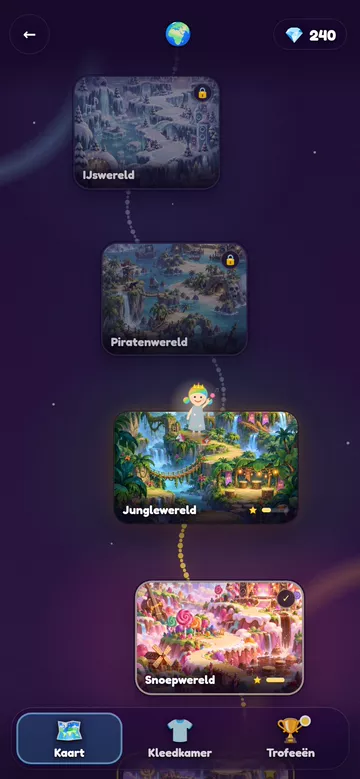
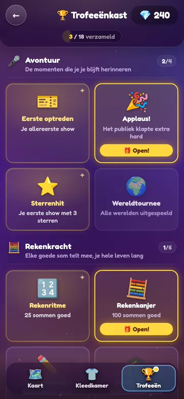
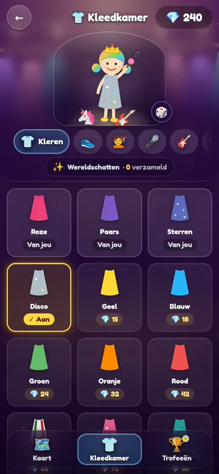
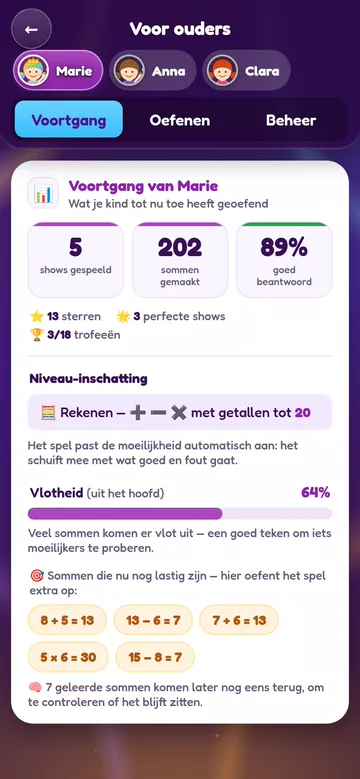

Rekenen en tellen als een show, voor kinderen van 5 tot 8.
▶ Speel meteen
Werelden ontdekken
Trofeeën verzamelen
De kleedkamer
Wat jij ziet
Het rekenen
- Jij kiest wat er geoefend wordt: + − × ÷, tot 10, 20, 50 of 100.
- Het groeit mee: lukt het, dan worden de sommen pittiger.
- Lastige sommen komen terug, en jij ziet welke.
De voortgang blijft op dit toestel, en het werkt ook zonder internet.
Vertel het verder